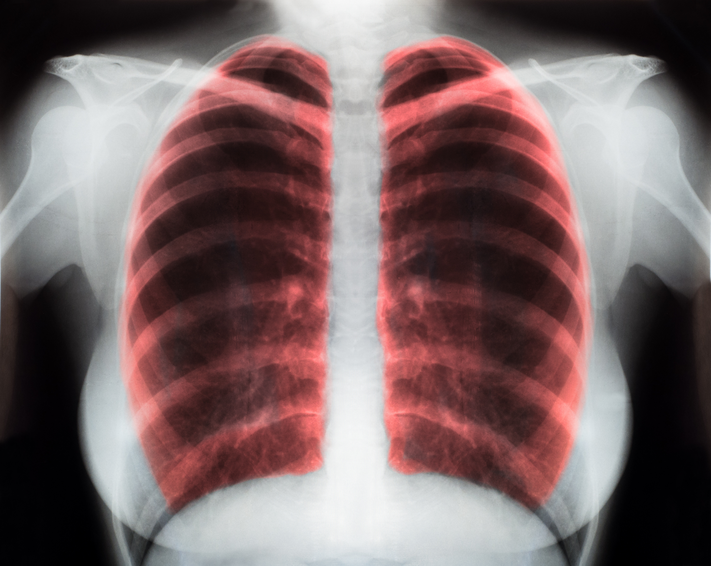

What does a pulmonologist treat?
Diseases commonly evaluated and treated by pulmonologists include asthma, chronic obstructive lung disease (COPD), emphysema, lung cancer, interstitial and occupational lung diseases, complex lung and pleural infections including tuberculosis, pulmonary hypertension, and cystic fibrosis.
When you breathe, your lungs take in oxygen from the air and deliver it to the bloodstream. ... The term lung disease refers to many disorders affecting the lungs, such as asthma, COPD, infections like influenza, pneumonia and tuberculosis, lung cancer, and many other breathing problems
What is COPD
Chronic Obstructive Pulmonary Disease (COPD) is an umbrella term used to describe progressive lung diseases including emphysema, chronic bronchitis, and refractory (non-reversible) asthma. This disease is characterized by increasing breathlessness.


Signs and Symptoms of COPD
- Wheezing
- Shortness of breath
- Chest tightness
- chronic cough
- Swelling in ankles, feet or legs
- Frequent respiratory infections
How is copd diagnosed
Diagnosis usually involves imaging tests, blood tests, and lung function tests. There's no cure for COPD, but treatment can help ease symptoms, lower the chance of complications, and generally improve quality of life. Medications, supplemental oxygen therapy, and surgery are some forms of treatment.

